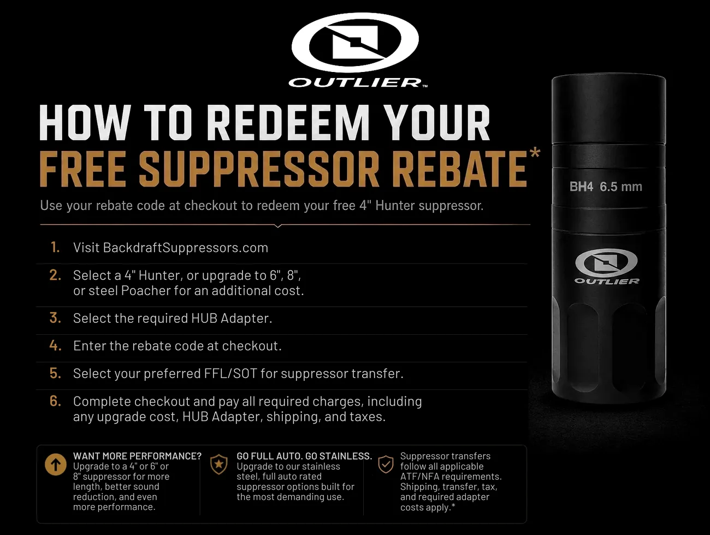

Welcome, Gun Owners of America Members!
Thank you for your continued support of Gun Owners of America and for standing up for our Second Amendment rights.
As a GOA member, you’re eligible to redeem your Free Suppressor Rebate.
Thank you for your continued support of Gun Owners of America and for standing up for our Second Amendment rights.
As a GOA member, you’re eligible to redeem your Free Suppressor Rebate.
Four steps
Use your rebate code at checkout to redeem your 4″ Hunter Suppressor (non-magnum).

Shipping/Handling, the required HUB Adapter, applicable taxes, transfer taxes, and any FFL/SOT or ATF/NFA-related fees are the responsibility of the customer.
Choose your 4″ Hunter Suppressor, add the required HUB Adapter, and enter your rebate code at checkout.
By redeeming this rebate, the customer acknowledges and agrees to the Backdraft Suppressors Free Suppressor Rebate Terms and Conditions below, including all items marked with an asterisk above. The customer understands that the rebate applies to the eligible suppressor only and does not include the HUB Adapter, shipping/handling, applicable taxes, transfer taxes, ATF/NFA-related fees, FFL/SOT transfer fees, or any other required fees. The customer further understands that the estimated 8–12 week lead time is not guaranteed and may be extended without notice.
The fine print
Backdraft Suppressors Free Suppressor Rebate — Customer Acknowledgement of Required Rebate Terms
The Backdraft Suppressors Free Suppressor Rebate allows eligible customers to redeem a qualifying rebate code toward one eligible 4″ Hunter Suppressor, non-magnum only, through BackdraftSuppressors.com, subject to these Terms and Conditions, product availability, legal eligibility, and all applicable federal, state, and local laws.
The rebate may be received through various qualifying sources, including but not limited to eligible purchases from GetOutlier.com, participating dealers, promotional offers, product bundles, rebate cards, order inserts, digital codes, or other approved promotional channels. Regardless of how the rebate code is received, the rebate terms remain the same.
The rebate applies to the eligible suppressor only.
The HUB Adapter is not included. Shipping/handling is not included. Applicable taxes are not included. Transfer fees are not included. Any ATF, NFA, FFL, SOT, state, local, sales tax, transfer tax, or other required fees are the responsibility of the customer.
By redeeming a rebate code, the customer acknowledges and agrees that additional charges may be due at checkout and/or through the selected FFL/SOT dealer before the suppressor can be legally transferred.
Each valid rebate code may be redeemed toward one eligible 4″ Hunter Suppressor, non-magnum only.
The stated rebate value is $189.99. Customers may apply the rebate value toward an eligible upgrade or alternate suppressor option where available, and the customer is responsible for paying any difference in price, along with all required accessories, shipping/handling, taxes, transfer-related fees, and any other applicable charges.
All models, calibers, finishes, configurations, and upgrade options are subject to availability.
Each rebate code is valid for one suppressor redemption only. There is no limit on the number of rebate codes a customer may redeem, provided each rebate code is valid, unused, and redeemed according to these Terms and Conditions.
For example, if a customer has multiple valid rebate codes, each code may be redeemed separately for one eligible suppressor per code.
Rebate codes may be transferred or gifted to another eligible person. Rebate codes may not be fraudulently generated, duplicated, altered, counterfeited, or used in any unauthorized manner.
Rebate codes have no cash value and may not be redeemed for cash, store credit, refund, or any monetary payment.
Each rebate code is valid for one year from the date it is received or issued, unless a different expiration date is printed, displayed, assigned, or otherwise communicated with the rebate code.
Expired rebate codes are void and will not be honored.
To redeem a valid rebate code, the customer must:
Incomplete redemptions, invalid codes, expired codes, duplicate codes, or redemptions that do not comply with these Terms and Conditions may be denied, cancelled, or voided.
A compatible HUB Adapter is required and is not included in the free suppressor rebate.
The customer is responsible for selecting and purchasing the appropriate HUB Adapter for their suppressor, firearm, barrel threading, and intended setup. Customers should verify compatibility before completing their order, installing the adapter, or using the suppressor.
The customer is responsible for all charges not expressly included in the rebate.
These may include, but are not limited to:
Taxes and fees may be calculated based on the full value of the suppressor, the HUB Adapter, any upgraded item, and/or any other products included in the order.
Fees charged by a receiving FFL/SOT or other third party are separate from BackdraftSuppressors.com and remain the sole responsibility of the customer.
Suppressors are regulated items and must be transferred in accordance with all applicable laws.
Outlier USA / Backdraft Suppressors will transfer the suppressor to the customer’s selected FFL/SOT through the required transfer process. The customer is responsible for selecting a qualified FFL/SOT and completing all required transfer paperwork, approvals, background checks, tax payments, fees, and legal requirements necessary to receive the suppressor.
The customer is responsible for all fees charged by the selected FFL/SOT, including any transfer, processing, storage, or administrative fees.
Redemption of a rebate code does not guarantee that the customer is legally eligible to receive or possess a suppressor. If the customer is not legally eligible, if the selected FFL/SOT cannot complete the transfer, or if the transfer is prohibited by law, the redemption may be cancelled or denied.
The current estimated lead time is 8–12 weeks after checkout and payment are completed.
This timeline is an estimate only and is not a guaranteed delivery date, shipping date, transfer date, or approval date. Due to demand, production volume, supplier delays, regulatory transfer requirements, FFL/SOT processing, ATF/NFA processing, carrier delays, or other operational factors, lead times may be extended automatically without notice.
Customers acknowledge that Outlier USA / Backdraft Suppressors is currently experiencing extended fulfillment timelines and that actual delivery or transfer may take longer than the estimated 8–12 week period.
Customer updates may be limited during the production and transfer process. Customers should expect to receive an order confirmation and a shipping notification when the item ships to the selected FFL/SOT.
All suppressors, accessories, HUB Adapters, finishes, calibers, configurations, and upgrade options are subject to availability.
Outlier USA and Backdraft Suppressors reserve the right to modify, substitute, delay, discontinue, or replace any promotional item with an item of equal or greater value if necessary due to inventory, production, regulatory, supplier, or operational considerations.
Product images, descriptions, finishes, and promotional materials are for general reference and may vary from the final product received.
Unless expressly permitted in writing by Outlier USA / Backdraft Suppressors, rebate codes may not be combined with other rebates, discounts, coupons, credits, promotional offers, dealer offers, or special pricing.
Rebate codes are not redeemable for cash, credit, refund, or any monetary value.
Due to the regulated nature of suppressors and the ATF/NFA transfer process, suppressors are not eligible for return, exchange, or refund once the order, production, shipment, transfer, or paperwork process has begun, except where expressly required by law.
If a qualifying purchase that resulted in the issuance of a rebate code is returned, cancelled, charged back, refunded, or otherwise reversed, Outlier USA / Backdraft Suppressors may cancel the related rebate code, void the redemption, reduce any refund by the rebate value, or seek recovery of the promotional value received.
If a rebate has already been redeemed, the customer may be responsible for the rebate value, related charges, fees, costs, or any other amounts associated with the redemption.
This promotion is available only to eligible U.S. customers located in jurisdictions where suppressors are legal.
This promotion is not available in Alaska, in any state or jurisdiction where suppressors are prohibited, or where the promotion is otherwise restricted, taxed in a way that makes the promotion unavailable, or prohibited by law.
Void where prohibited, restricted, or otherwise unavailable by federal, state, or local law.
It is the customer’s sole responsibility to understand and comply with all applicable federal, state, and local laws before redeeming a rebate code, purchasing a HUB Adapter, selecting an FFL/SOT, or attempting to receive a suppressor.
Outlier USA and Backdraft Suppressors reserve the right to deny, cancel, suspend, revoke, or void any rebate code, redemption, order, or promotion for any reason, including but not limited to suspected misuse, fraud, duplicate redemption, unauthorized code generation, code alteration, resale abuse, ineligibility, chargebacks, returned qualifying purchases, violation of these Terms and Conditions, or violation of applicable law.
Remedies may include cancellation of orders, voiding of rebate codes, denial of redemption, reduced refunds, suspension of account privileges, and any other legal, contractual, or equitable remedies available.
Outlier USA and Backdraft Suppressors reserve the right to modify, suspend, extend, or terminate the Backdraft Suppressors Free Suppressor Rebate program at any time without prior notice.
Changes may include, but are not limited to, rebate value, eligible products, upgrade options, redemption process, expiration rules, lead times, fulfillment process, available inventory, required accessories, fees, or these Terms and Conditions.
Outlier USA and Backdraft Suppressors are not responsible for typographical errors, pricing errors, image errors, technical issues, website errors, checkout errors, unavailable network connections, interrupted service, incorrect customer information, invalid FFL/SOT information, shipping carrier delays, or third-party processing issues.
If any provision of these Terms and Conditions is found to be invalid, unlawful, or unenforceable, the remaining provisions will remain in full force and effect.
We appreciate your support and are proud to offer this exclusive benefit to fellow Second Amendment supporters.